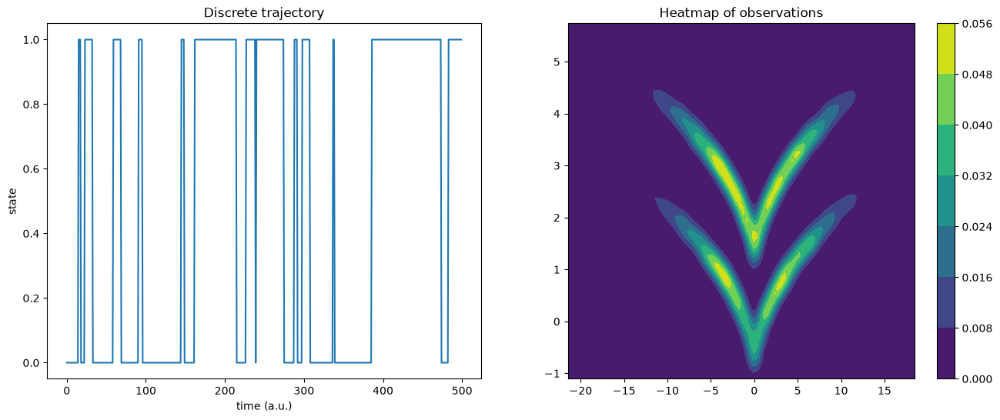
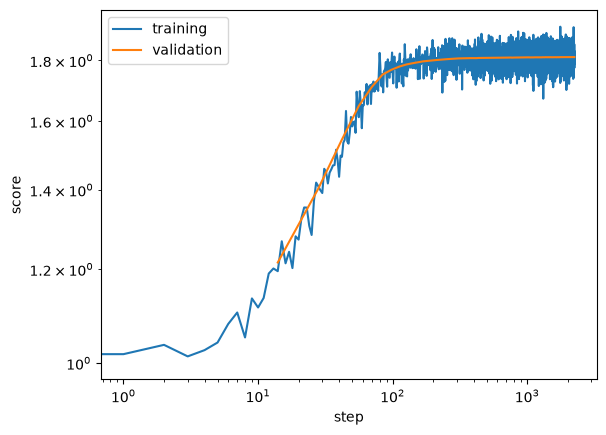
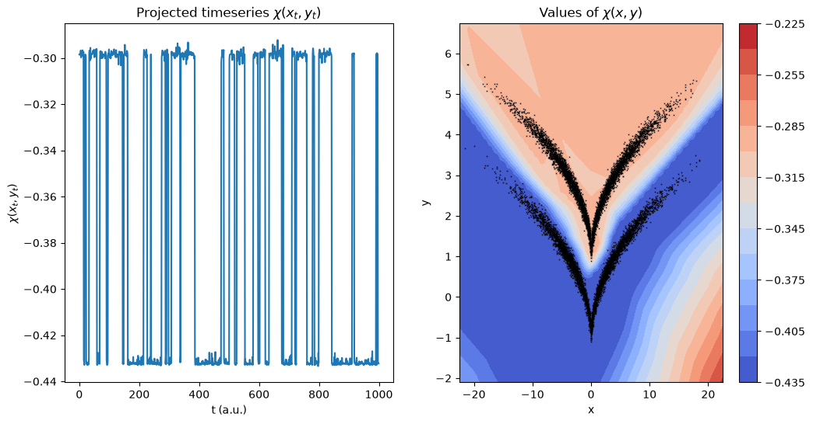
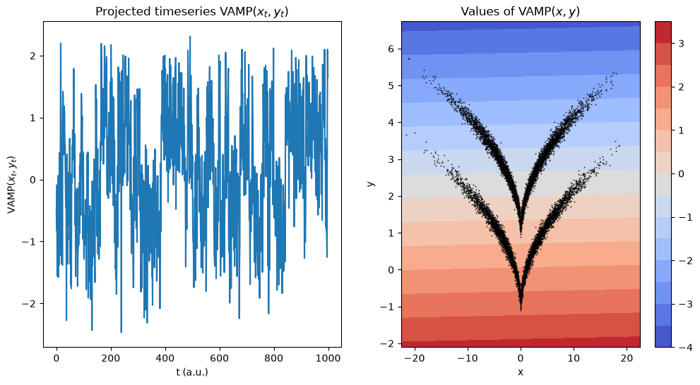

VAMPNets¶
For users already familiar with the VAMPNets interface: The corresponding API docs.
VAMPNets [1] are a deep learning approach that try to find transformations \(\chi_0\) and \(\chi_1\) parameterized by neural networks which optimize a VAMP score [2]. These networks therefore can yield transformations of input data so that the featurization is optimal, i.e., the approximation of the Koopman operator is best.
Working with VAMPNets requires a working installation of PyTorch.
[1]:
import numpy as np
import torch
import torch.nn as nn
torch.manual_seed(42)
np.random.seed(42)
Now we select a device (i.e., the hardware on which optimizations and transformations are carried out in VAMPNets):
[2]:
if torch.cuda.is_available():
device = torch.device("cuda")
torch.backends.cudnn.benchmark = True
else:
device = torch.device("cpu")
torch.set_num_threads(12)
Our test system is the sqrt model. It is a hidden two-state jump process with a two-dimensional observable emission distribution so that the two states cannot be linearly separated.
[3]:
from deeptime.data import sqrt_model
dtraj, traj = sqrt_model(n_samples=10000, seed=42)
Here, dtraj are the discrete reference states and traj is the observable trajectory:
[4]:
import scipy.stats as stats
import matplotlib.pyplot as plt
X, Y = np.meshgrid(
np.linspace(np.min(traj[:, 0]), np.max(traj[:, 0]), 100),
np.linspace(np.min(traj[:, 1]), np.max(traj[:, 1]), 100),
)
kde_input = np.dstack((X, Y)).reshape(-1, 2)
kernel = stats.gaussian_kde(traj.T, bw_method=.1)
Z = kernel(kde_input.T).reshape(X.shape)
f, (ax1, ax2) = plt.subplots(1, 2, figsize=(16, 6))
ax1.plot(dtraj[:500])
ax1.set_title('Discrete trajectory')
ax1.set_xlabel('time (a.u.)')
ax1.set_ylabel('state')
cm = ax2.contourf(X, Y, Z)
plt.colorbar(cm, ax=ax2);
ax2.set_title('Heatmap of observations');

In order to work with the VAMPNet / PyTorch API it can be convenient to first convert the trajectory into a time-lagged dataset.
[5]:
from deeptime.util.data import TrajectoryDataset
dataset = TrajectoryDataset(1, traj.astype(np.float32))
We now can split data into train and validation set, move the validation set into a torch tensor and onto the appropriate device.
[6]:
n_val = int(len(dataset)*.3)
train_data, val_data = torch.utils.data.random_split(dataset, [len(dataset) - n_val, n_val])
In order to define the transformations \(\chi_0\) and \(\chi_1\), in principle any PyTorch module can be used. Deeptime offers pre-defined multilayer perceptrons for that purpose. If not specified otherwise, it is assumed that \(\chi_0 = \chi_1\) and parameters are shared.
[7]:
from deeptime.util.torch import MLP
lobe = MLP(units=[traj.shape[1], 15, 10, 10, 5, 1], nonlinearity=nn.ReLU, initial_batchnorm=True)
We can print a string representation of our lobe.
[8]:
print(lobe)
MLP(
(_sequential): Sequential(
(0): BatchNorm1d(2, eps=1e-05, momentum=0.1, affine=True, bias=True, track_running_stats=True)
(1): Linear(in_features=2, out_features=15, bias=True)
(2): ReLU()
(3): Linear(in_features=15, out_features=10, bias=True)
(4): ReLU()
(5): Linear(in_features=10, out_features=10, bias=True)
(6): ReLU()
(7): Linear(in_features=10, out_features=5, bias=True)
(8): ReLU()
(9): Linear(in_features=5, out_features=1, bias=True)
)
)
It is important to transfer the parameters of the lobe to the appropriate device.
[9]:
lobe = lobe.to(device=device)
Now a VAMPNet instance can be created. For the full range of possible arguments, please see the API docs.
[10]:
from deeptime.decomposition.deep import VAMPNet
vampnet = VAMPNet(lobe=lobe, learning_rate=1e-3, device=device)
In order to train it, data loaders must be created for the data sets:
[11]:
from torch.utils.data import DataLoader
loader_train = DataLoader(train_data, batch_size=512, shuffle=True)
loader_val = DataLoader(val_data, batch_size=len(val_data), shuffle=False)
Let’s train. We may also provide a tqdm progress bar to the fit.
[12]:
from tqdm.notebook import tqdm
model = vampnet.fit(loader_train, n_epochs=160,
validation_loader=loader_val, progress=tqdm).fetch_model()
We can visualize the progression of the training:
[13]:
plt.loglog(*vampnet.train_scores.T, label='training')
plt.loglog(*vampnet.validation_scores.T, label='validation')
plt.xlabel('step')
plt.ylabel('score')
plt.legend();

Transforming and plotting the trajectory reveals a featurization in which the two states are nicely disentangled:
[14]:
feat = model.transform(traj)
f, (ax1, ax2) = plt.subplots(1, 2, figsize=(12, 6))
ax1.set_title(r'Projected timeseries $\chi(x_t, y_t)$')
ax1.plot(feat[:1000])
ax1.set_xlabel('t (a.u.)')
ax1.set_ylabel(r'$\chi(x_t, y_t)$')
xmax = np.max(np.abs(traj[:, 0]))
ymin = np.min(traj[:, 1])
ymax = np.max(traj[:, 1])
grid = np.meshgrid(np.linspace(-xmax-1, xmax+1, 150), np.linspace(ymin-1, ymax+1, 50))
xy = np.dstack(grid).reshape(-1, 2)
z = model.transform(xy)
ax2.set_title(r'Values of $\chi(x,y)$')
ax2.set_xlabel('x')
ax2.set_ylabel('y')
cb = ax2.contourf(grid[0], grid[1], z.reshape(grid[0].shape), levels=15, cmap='coolwarm')
ax2.scatter(*traj.T, s=.1, color='black', marker='x')
plt.colorbar(cb, ax=ax2);

Comparing to a direct evaluation of VAMP, one can see that the the projection disentangles the process better when using the trained transformation - mainly due to the states not being linearly separable and VAMP being a linear method.
[15]:
from deeptime.decomposition import VAMP
vamp_model_vnet = VAMP(lagtime=1, observable_transform=model).fit(traj).fetch_model()
vamp_model_direct = VAMP(lagtime=1, dim=1).fit(traj).fetch_model()
[16]:
feat = model.transform(traj)
f, (ax1, ax2) = plt.subplots(1, 2, figsize=(12, 6))
ax1.set_title(r'Projected timeseries $\mathrm{VAMP}(x_t, y_t)$')
ax1.plot(vamp_model_direct.transform(traj)[:1000])
ax1.set_xlabel('t (a.u.)')
ax1.set_ylabel(r'$\mathrm{VAMP}(x_t, y_t)$')
z = vamp_model_direct.transform(xy)
ax2.set_title(r'Values of $\mathrm{VAMP}(x,y)$')
ax2.set_xlabel('x')
ax2.set_ylabel('y')
cb = ax2.contourf(grid[0], grid[1], z.reshape(grid[0].shape), levels=15, cmap='coolwarm')
ax2.scatter(*traj.T, s=.1, color='black', marker='x')
plt.colorbar(cb, ax=ax2);

This is also reflected in the (for example) VAMP-2 score:
[17]:
print(f'VAMPNet score {vamp_model_vnet.score(2):.5f}')
print(f'Direct VAMP score {vamp_model_direct.score(2):.5f}')
VAMPNet score 1.81218
Direct VAMP score 1.28465
From here, e.g., a MSM could be estimated to systematically analyze the kinetic properties of the system.
[18]:
from deeptime.clustering import KMeans
from deeptime.markov.msm import MaximumLikelihoodMSM
projection = vamp_model_vnet.transform(traj)
dtraj_rec = KMeans(2).fit(projection).transform(projection)
msm = MaximumLikelihoodMSM().fit(dtraj_rec, lagtime=1).fetch_model()
The estimated transition matrix fits with the hidden transition matrix that generated the data
[19]:
print("estimated transition matrix", msm.transition_matrix)
estimated transition matrix [[0.95335223 0.04664777]
[0.05229593 0.94770407]]
References